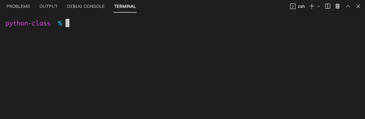
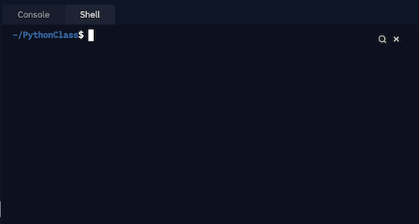
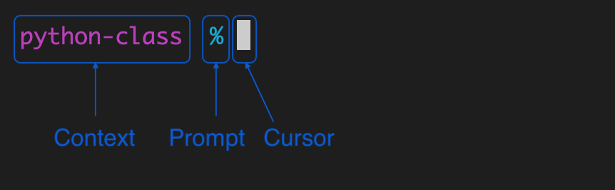
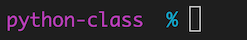

Terminal¶
A brief tour of the command line on a terminal.
Table of Contents
Introduction¶
We’ve talked about the Python shell – it is an interface where you can type in python code, and it will run it and print out the results.
When people use the term console, command line, terminal or shell, they usually mean the Operating System Shell.
The command line uses a shell scripting language like bash, zsh or PowerShell to interact with the the underlying operating system.
Part 1: The terminal¶
While the term “terminal” is often used synonomously with “the command line”, it actually refers to the application that you run to get to the command line.
Or, in the case of a terminal embedded in a suite of developer tools such as VS Code or Repl.it, it refers the terminal part of the application.
2.1: Starting a terminal¶
To open and focus the shell, click the Terminal tab (usually in the bottom panel) or use the ⌃` keyboard shortcut.
Reminder
You can collapse or expand the sidebar with the keyboard shortcut ⌘B or ⌃B and you can maxamize the bottom panel by clicking the ^ symbol in the upper right corner. You might want to do so for this lesson.
You should see something like this:

To open and focus the shell, click the Shell tab in the right-most panel.
Reminder
You can collapse or expand the sidebar by clicking the selected icon (the file icon, by default) and you can resize or collapse panes by clicking and dragging the bar between panes. You might want to collapse all other panes for the remainder of this lesson.
You should see something like this:

Open the launchpad by clicking the icon in the dock or using the F4 keyboard shortcut.
Type the first few letters of
terminaluntil the Terminal app is selected.Press Enter.
Open the Start Menu by clicking the icon from the taskbar or pressing the key.
Type the first few letters of
powershelluntil the Windows PowerShell app is selected.Press Enter.
1.2: The Prompt¶
Even when looking at a blank prompt, there may be a lot going on. Lets take a look.

Contextual information – typically this defaults to current directory, but may include other information such as any active virtual environment.
Prompt symbol – a symbol that indicates the end of the prompt.
bashuses$,zshuses%andPowerShelluses>.Cursor – indicates the position where your text will go when you type. (This may vary depending on the system.) On most systems the cursor will change style when the terminal is not focused, such as outlined as pictured here:

In this and other lessons, a $ is used to indicate the prompt in command line
example code. Any lines not starting with a $ are the output of a command.
Part 2: Command line tour¶
2.1: Commands and arguments¶
Every command that you run on the terminal is really just a program. For
example, try the date command, which prints the current date and time.
$ date
Thu Aug 19 04:45:47 MDT 2021
The uname command prints system information, by default the operating system
name.
$ uname
Darwin
The echo command is very similar to the Python print() command–it prints
any arguments that follow to the screen, followed by a newline.
On the command line, arguments are seperated by spaces and quotes are usually
not needed. In this example, we’ll use the echo command with one argument:
Hello..
$ echo Hello.
Hello
Another example of a program is python, which, without any arguments starts a Python shell.
$ python
Python 3.8.1 (default, Jun 4 2021, 23:47:23)
[Clang 12.0.5 (clang-1205.0.22.9)] on darwin
Type "help", "copyright", "credits" or "license" for more information.
Python initialized. Welcome.
>>>
If we provide a filename argument to python it will execute the code in that
file. In this example we’ll run the program python with the argument
hello.py. This will run the file hello.py in the
working directory if it exists.
$ python hello.py
hello
Since spaces are used to seperate arguments, this can cause problems if a filename that includes spaces. (Which is one of the reasons that’s not recommended.)
Imagine we have a file named hello world.py. If we try to run the file the
normal way, python will get two arguments: hello and world.py. Python
will look for a file hello first, and exit with an error message when it is
not found.
$ python hello world.py
python: can't open file 'hello': [Errno 2] No such file or directory
To avoid this we can enclose the filename in single or double quotes.
$ python "hello world.py"
Hello world!
Many programs take flags or options, which are
special arguments that start with a dash (-).
Short options start with a single dash followed by a single character. For
example, the date command takes a -u flag which tells date to use UTC
instead of the local timezone.
$ date -u
Sat Aug 21 23:12:33 UTC 2021
Some commands allow short options to be combined together. For example, the
uname uses the -s flag to print operating system name and the -r flag to
print the release, which can be passed two seperate arguments.
$ uname -s -r
Darwin 20.3.0
As a shorthand, we can combine the two as -sr or -rs.
$ uname -sr
Darwin 20.3.0
Long options start with two dashes followed by a human readable word. For
example, the python takes a --version option, which prints the Python
version.
$ python --version
Python 3.8.1
Sometimes an option requires an argument. For example the python command
accepts the -c option to specify a Python statement to execute. Notice that
since the command contains both spaces and double quotes, it is enclosed in
single quotes.
$ python -c 'print("oh hai")'
oh hai
Sometimes there is both a long and short version of the same option. For
example, to print the usage for python you can use either -h or --help.
Summary¶
Commands on the command line are programs.
Commands can take arguments, seperated by spaces. Single or double quotes are only needed to enclose arguments with spaces or other special characters.
flags or options are special arguments that start with a dash (
-).Short options start with a single dash followed by a single character like:
-s. Some programs allow you to combine multiple short options like:-xyzshort for-x -y -z.Long options start with two dashes followed by a human readable word like:
--long.The commands:
echo– print to screendate– show date and timepython– execute Python codeuname– display system information
2.3: Getting Help¶
Many programs, including python, take a -h or --help option which will
show usage information about that particular program, usually including the
available options.
$ python --help
Python 3.8.1
usage: python [option] ... [-c cmd | -m mod | file | -] [arg] ...
Options and arguments (and corresponding environment variables):
-b : issue warnings about str(bytes_instance), str(bytearray_instance)
and comparing bytes/bytearray with str. (-bb: issue errors)
-B : don't write .pyc files on import; also PYTHONDONTWRITEBYTECODE=x
-c cmd : program passed in as string (terminates option list)
...
You can also get information about most programs using the man command, which
prints manual pages (man pages). Use the man command followed by the name of
the program. For example, to get the manual page for the man program, use
man man.
The man page may be displayed using a pager program used for scrolling through
long documents like less. Most pager programs use SPACE to scroll and
q to exit. The man page for man should tell you what, if any, pager is
used, then you can look up the man page for the pager program.
$ man man
man(1) man(1)
NAME
man - format and display the on-line manual pages
SYNOPSIS
man [-acdfFhkKtwW] [--path] [-m system] [-p string] [-C config_file] [-M pathlist] [-P pager] [-B
browser] [-H htmlpager] [-S section_list] [section] name ...
DESCRIPTION
man formats and displays the on-line manual pages. If you specify section, man only looks in that sec-
tion of the manual. name is normally the name of the manual page, which is typically the name of a com-
mand, function, or file. However, if name contains a slash (/) then man interprets it as a file specifi-
cation, so that you can do man ./foo.5 or even man /cd/foo/bar.1.gz.
See below for a description of where man looks for the manual page files.
...
Help information for commands provided by the shell is available via the help
program. Add the name of the command you want information about, or run help
with no arguments to get a list of shell commands.
$ help
Here is a list of topics for which special help is available:
alias compcall dot functions noglob setcap umask zftp
autoload compctl echo getcap popd setopt unalias zle
...
$ help echo
echo: echo [-neE] [arg ...]
Write arguments to the standard output.
Display the ARGs, separated by a single space character and followed by a
newline, on the standard output.
...
$ help help
help: help [-dms] [pattern ...]
Display information about builtin commands.
Displays brief summaries of builtin commands. If PATTERN is
specified, gives detailed help on all commands matching PATTERN,
otherwise the list of help topics is printed.
Options:
-d output short description for each topic
-m display usage in pseudo-manpage format
-s output only a short usage synopsis for each topic matching
PATTERN
...
Summary¶
Many programs will show usage information when a
-hor--helpoption is passed. For examplepython --help.The
manprogram can be used to view the man page for a particular program. For example,man python.The
helpprogram can be used to view usage information for shell builtin commands. For examplehelp echo.
Exercise¶
Exercise 104
Find the flag for each of the following, then try using the command and flag.
Use the
manprogram to see the man page for theunameprogram. What option is used to print the machine hardware name?Use the
helpcommand to see the usage information for theechocommand. What option is used to avoid adding a newline?Run
pythonwith the-hoption to viewpythonusage information. What option is used to launch an interactive shell after running a script?
Use the
manprogram to see the man page for theunameprogram. What option is used to print the machine hardware name?$ man uname UNAME(1) User Commands UNAME(1) NAME uname - print system information DESCRIPTION Print certain system information. With no OPTION, same as -s. -a, --all print all information, in the following order, except omit -p and -i if unknown: -s, --kernel-name print the kernel name -n, --nodename print the network node hostname -r, --kernel-release print the kernel release -v, --kernel-version print the kernel version -m, --machine print the machine hardware name ...
$ uname -m x86_64
Use the
helpcommand to see the usage information for theechocommand. What option is used to avoid adding a newline?$ help echo echo: echo [-neE] [arg ...] Write arguments to the standard output. Display the ARGs, separated by a single space character and followed by a newline, on the standard output. Options: -n do not append a newline -e enable interpretation of the following backslash escapes -E explicitly suppress interpretation of backslash escapes ...
$ echo -n hello hello
Run
pythonwith the-hoption to viewpythonusage information. What option is used to launch an interactive shell after running a script?$ python -h usage: python [option] ... [-c cmd | -m mod | file | -] [arg] ... Options and arguments (and corresponding environment variables): -b : issue warnings about str(bytes_instance), str(bytearray_instance) and comparing bytes/bytearray with str. (-bb: issue errors) -B : don't write .pyc files on import; also PYTHONDONTWRITEBYTECODE=x -c cmd : program passed in as string (terminates option list) -d : debug output from parser; also PYTHONDEBUG=x -E : ignore PYTHON* environment variables (such as PYTHONPATH) -h : print this help message and exit (also --help) -i : inspect interactively after running script; forces a prompt even if stdin does not appear to be a terminal; also PYTHONINSPECT=x ...
$ python -i hello.py hello >>>
2.4: Getting around¶
Important
See also paths lesson.
To find out where you are use the pwd command.
$ pwd
/Users/pythonclass
To list files use the ls command.
$ ls
file1 file2 file3
$ ls -l
$ ls -a
$ ls -A
$ ls -h
$ ls --color=always
To change directories use the cd command.
$ cd Documents
$ cd
$ cd -
$ cd -P
2.5: Getting file information¶
To get information about a file use the file command.
$ file null.png
null.png: PNG image data, 1200 x 904, 8-bit/color RGBA, non-interlaced
$ file README.md
README.md: HTML document text, UTF-8 Unicode text
Use the wc command to get word, line and character counts.
$ wc README.md
64 184 2000 README.md
$ wc -l README.md
64 README.md
The cat command is intended for concatenating files, but it is also the
easiest way to show the entire contents of a file.
$ cat hello.txt
Hello python class!
Use the less command to scroll through a file.
$ less README.md
The head and tail commands can be used to show the beginning or end of a
file. The -n option can be used to specify the number of lines to show.
$ head README.md
Python Class
============
This repo is for the lessons and code related to the Python class that I've
been teaching to a few friends and family.
<h2 align="center"><a href="https://alissa-huskey.github.io/python-class/">» :book: Go to the lessons »</a> </h2>
Development Notes
-----------------
$ tail README.md
* Branch: `gh-pages`
* Folder: `/ (root)`
* Secrets & Deploy Key `ACTIONS_PAGES_DEPLOY_KEY`
<!-- references -->
[jb-pages]: https://jupyterbook.org/publish/gh-pages.html
[github-pages]: https://pages.github.com/
[github-actions]: https://github.com/features/actions
[actions-gh-pages]: https://github.com/peaceiris/actions-gh-pages
2.6: Making filesystem changes¶
To move a file use the mv command.
$ mv a b
$ mv -i a b
$ mv -n a b
To remove a file or directory use the rm command.
$ rm a
$ rm -I
$ rm -f
$ rm -r
To copy a file or directory use the cp command.
$ cp a b
$ cp -i a b
$ cp -r
$ cp -f
To create a directory use the mkdir command.
$ mkdir x
$ mkdir -p x
2.7: Text processing¶
Sort the contents of a file using the sort command.
$ sort x
$ sort -u x
$ sort -g x
$ sort -r
$ sort -R
Reference¶
Glossary¶
The Command Line¶
- console¶
- system console¶
Comes from a time when early text-based computer systems with a keyboard and monitor interface were used to interact with servers or mainframes. In modern usage people usually mean accessing the operating system’s shell, usually with a terminal emulator. In repl.it, the right-most pane is referred to as the console.
- shell¶
- interactive shell¶
- command line interpreter¶
- operating system shell¶
A text-based interface that runs code or command input. Operating systems have shells for system administration and operation such as Bash or Zsh in Unix-like systems or Powershell or the DOS Command Prompt in Windows. Some languages provide shells that execute code such as the Python Interactive Shell or the IRB.
- terminal¶
- terminal emulator¶
In modern computing, an application that provides a text-based interface to the operating system’s shell. Some examples include konsole and the Gnome Terminal in Unix-like systems, Terminal and iTerm2 on MacOs, and PuTTY, Cygwin mintty, the Windows Console, and the Windows Terminal for Windows.
The term “console” and “terminal” are often used interchangaby, both historically to refer to a hardware server interface as well as the more modern colloquial meaning of accessing the operating system’s shell.
- command line¶
In casual use, people usually mean accessing the operating system’s shell, usually with a terminal emulator. See also, console, terminal.
- flag¶
A command line option that toggles on or off some feature. For example flags to enable or disable color might be:
--colorand--no-color. See also option.- option¶
A special kind of command line argument that starts with a dash.